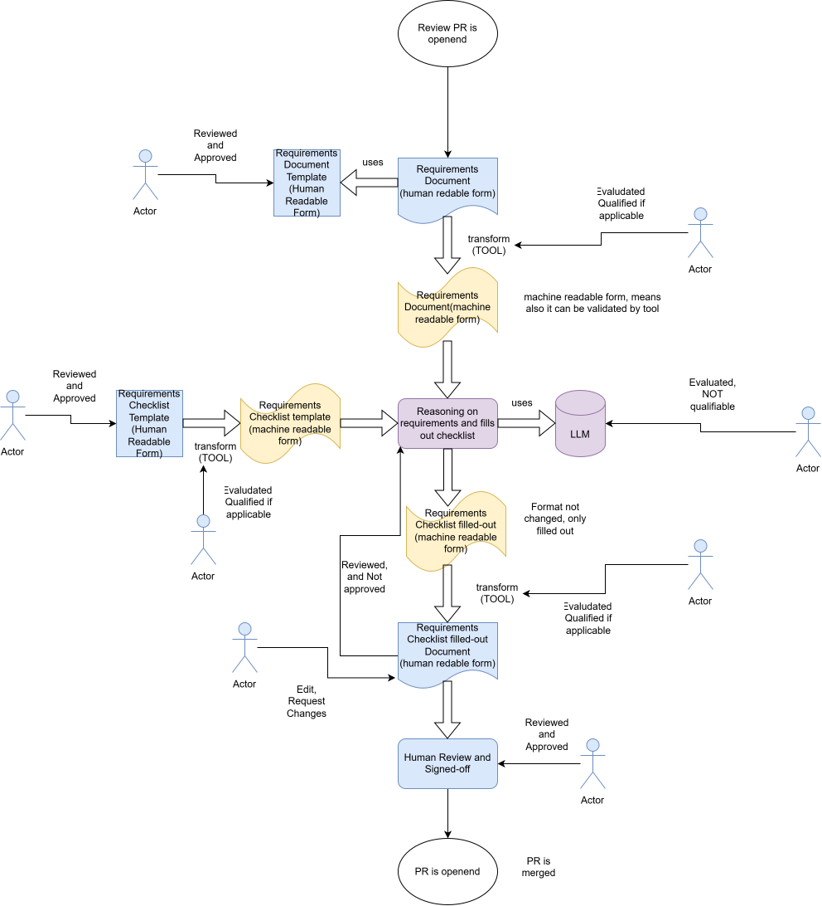

AI-supported development process execution in a safety context#
Context: This document accompanies the discussion in eclipse-score/process_description #805 — “Pilot for AI supported development process execution in safe context”. It describes a proposed concept and a pilot implementation.
1. The problem#
The S-CORE process description defines structured workflows, templates, and checklists to produce verifiable safety evidence. Requirements inspection applies a level-appropriate checklist to stakeholder, feature, and component requirements before they are accepted as safety evidence. The checklist profile is not identical at every level.
Filling that checklist is manual, time-consuming, and repetitive — the same quality questions apply to every requirement. Meanwhile, Large Language Models (LLMs) are now capable of performing exactly this kind of structured text assessment. The question is now under what conditions their output can legitimately enter a safety case.
The goal is development support: AI assists an engineer during development.
So AI is only considered here as a development support tool — it shall never generate safety evidence autonomously.
The safety premise is therefore:
If every AI-generated output is treated as a draft that a qualified engineer must explicitly review and approve before it becomes part of the safety case, then errors introduced by the AI can be detected and corrected before they cause any harm.
This is not a novel concept. ISO 26262 Part 8, Clause 11 establishes the principle of tool confidence: when a development tool affects a safety-relevant work product, the confidence in that tool (and the controls around it) must be demonstrated.
2. Concept: AI as a qualified development support tool#
Based on ISO 26262 Part 8 tool confidence principles, the approach in this pilot rests on three pillars:
2.1 The human review guardrail#
The chat-first demonstration follows this sequence:
1. Engineer starts the inspection in Copilot Chat
│
▼
2. Agent prepares permitted input and a structured draft assessment
│
▼
3. Validated editable checklist (inspection.md) is presented
Agent stops; engineer may edit or request corrections
│
▼
4. Engineer copies the checked checklist into the project's real
requirements inspection document and commits it
│
▼
5. The normal Git/GitHub review of that change is the approval
This means the AI output is never in the safety case — only the human-reviewed and approved version is. There is no local “approve” command: this tool cannot fabricate, relay, or otherwise stand in for that review. Approval is whatever the project’s existing PR review already is — authenticated by the platform, structurally unable to be the same person as the content’s author, and retained in the project’s own version history.
The diagram below illustrates the same guardrail as a data-flow: every human-readable/machine-readable conversion is performed by a deterministic transform tool, never by the LLM, and a human explicitly reviews and approves both the templates that feed the process and every artifact it produces.

The requirements document and checklist templates themselves are ordinary
repository content (the feat_req/comp_req directive schema and
workflows/req_safety_inspection/prompts/inspection.md).
They are reviewed and approved the same way as any other change, through
normal repository pull-request review — this satisfies the diagram’s
“Template (Reviewed & Approved)” gates without a separate runtime step.
2.2 Fixed output schema (no invented structure)#
The AI fills the exact public checklist, parsed directly from the canonical feature inspection checklist template rather than a paraphrased or hand-copied summary — the same Review ID, Acceptance Criteria, and Guidance columns, so there is no separate copy that can silently drift from the template:
passedper checklist item:yes/no/n/a/not_assessed.not_assessedmeans the AI lacked sufficient context (for example, a requirement’s parent text was not supplied); it is never conflated with a genuinen/aor treated as a pass.Full remarks per item.
A mandatory issue link whenever an item is
no, matching the template’s own mandatory “Issue link” column; forbidden for every other verdict.
The AI cannot add new sections, invent checklist IDs, or change the document structure. Schema validation rejects any response that does not conform.
2.3 Model provenance and evaluation trigger#
Available tool and model information is recorded with its source. Unavailable active model details remain unknown. A change to model, prompt, configuration, or intended use triggers evaluation of its impact on existing tool evidence.
Every AI assessment is a draft. A competent human independently reviews all checklist entries, corrects errors, and explicitly approves the reviewed artifact. This control can support error detection; it does not prove that all errors are detected, that the reviewer is competent, or that the tool is qualified.
Tool qualification may also be required, based on the S-CORE tool evaluation described in the Tool Management process, if independent human review is not sufficient to establish error detection.
The pilot distinguishes two different kinds of tool confidence subjects. The
deterministic transform tools — the RST requirement parser, JSON schema
validator, and Markdown renderer in workflows/ — perform a fixed,
independently testable conversion and can be evaluated and, if applicable,
qualified like any other development tool. The LLM reasoning step is treated
as categorically not qualifiable in this pilot: its output is never
evaluated for qualification credit and is always subject to the mandatory
human review and approval guardrail described above.
3. The executable concept#
3.1 What the pilot implements#
An automated workflow that pre-fills the feature/component S-CORE requirements inspection checklist for each supported requirement in scope. The S-CORE process description defines inspection for stakeholder, feature, and component requirement levels; each level has applicable, potentially different inspection guidance.
The AI inspects each requirement against the quality criteria defined in the S-CORE checklist — the same criteria a human reviewer would apply — and provides a structured first-pass assessment with a verdict and rationale for each criterion.
The pilot demonstrates an optional Copilot Chat Agent workflow for feature and component requirements only. Stakeholder requirements remain part of the existing S-CORE process and may be relevant as parent context, but are not directly assessed by this demonstrator. Their dedicated checklist profile is not implemented. Assumptions of use are also out of scope.
The Chat Agent workflow is:
Engineer starts the inspection directly in Chat
-> agent prepares input and automatically collects tool metadata
-> Copilot Chat Agent produces a JSON assessment
-> deterministic validation rejects wrong IDs, structure, or checklist drift
-> editable inspection.md checklist is written and the agent stops
-> engineer edits or requests corrections; re-validated on every check
-> engineer copies the checklist into the project's real inspection
document, commits it, and opens it for the normal Git/GitHub review
3.2 Fixed structure#
Assessments contain one entry per input requirement, the exact public S-CORE
checklist IDs parsed from the canonical template, yes / no / n/a /
not_assessed verdicts, full remarks, and a mandatory issue link for every
no. Unknown IDs, duplicate JSON keys, additional fields, invalid verdicts,
missing requirements, or checklist text diverging from the canonical template
are rejected.
There is one editable checklist in
example/inspection.md,
not a duplicate schema invented on top of it. The original judgment remains
preserved separately in a local manifest. Missing context must be resolved or
dispositioned by the reviewer; not_assessed must not silently become a pass.
3.3 Hand-off to the project’s own review#
After judgment the agent presents the editable checklist and ends its turn.
The engineer edits the table in example/inspection.md
or requests corrections in Chat. Every edit is re-validated and reported back
immediately; there is no local approval state to track, so no edit can be
mistaken for one.
There is no Approve as <name> command, no revision token, no audit.json, and
no report.rst produced by this tool. Finalization is the engineer copying the
checked checklist into the project’s actual inspection work product (for
example doc__<feature>_req_inspection), committing it, and relying on the
normal Git/GitHub review of that change — with its existing identity,
independence, and retention guarantees — as the only approval.
Copilot provenance#
Helpers automatically collect tool versions, workflow version and code hashes, available editor metadata, and installed Copilot Chat versions. Every value has a source. The active Copilot model cannot be auto-detected; an engineer may optionally declare a model label explicitly, recorded with its source as “reviewer supplied” rather than inferred or defaulted.
4. Requirements inspection demonstration#
The included example used is a snapshot of four publicly available S-CORE baselibs feature requirements. For example, the Utils Library requirement lists Base64, scoped operations, string views, safe arithmetic, atomic operations, and termination handling. This input demonstrates parsing and review flow; it is not a set of independently validated expected verdicts.
The prompt summarizes the public S-CORE inspection checklist. It requests structured draft assessments. Reviewers must consider parent requirements, traceability, timing, interfaces, safety/security attributes, verifiability, completeness, and justified exceptions.
Start in Chat using the reusable workflow prompt. The agent prepares input, validates its JSON judgment, presents the checklist file, and stops. Check permission to share input before starting. Local helpers collect metadata and validate the checklist; they never invoke Copilot, transmit data, or approve anything. Finalization happens outside this tool, through the project’s own requirements-inspection PR review.
The execution guide gives the Chat requests. Offline tests use constructed responses, without invoking Copilot. No live Copilot result or timing measurement is claimed by those tests. The historical pilot’s assessments are not reported as results from this implementation.
5. Additive S-CORE integration#
All extension content is under process_extensions/. Existing process
directories and workflows remain in place. An additive Bazel bundle mount
publishes the concept, execution guide, and draft workflow definitions alongside
the existing process using bazel run //:docs.
The existing wf__monitor_verify_requirements accepts stakeholder, feature, and
component requirements, including wp__requirements_stkh. The optional
wf__ai_req_safety_inspect proposal augments it for feature/component
assessments only, with the same responsible/approving roles (committer,
supported by the safety manager as moderator) rather than a separate role set;
it references wp__requirements_feat, wp__requirements_comp, and
wp__requirements_inspect. Stakeholder requirements remain upstream context in
the existing workflow, not direct input to this AI profile. The S-CORE
stakeholder checklist differs and is not implemented here. Tool evaluation runs
through the existing wf__tool_evaluate_tool, wf__tool_qualify_tool, and
wf__tool_approve_tool_verification_report — this proposal supplements their
evidence with AI-specific guidance rather than adding parallel workflows or
roles for the same work product. Published nodes remain draft proposals, not
approved process changes. Runtime templates, inputs, tests, and generated
outputs are not published as process definitions.
6. Limitations#
The RST reader accepts simple feature/component requirement directives only. It rejects stakeholder/AOU and mixed-level files rather than applying the wrong checklist, and does not implement general Sphinx-Needs parsing.
Parent IDs may be supplied, and an engineer may optionally supply parent or related requirement text as explicit context; without it, the linkage and completeness items are forced to
not_assessedrather than guessed. Nothing retrieves that text automatically fromneeds.jsonor another repository yet.Copilot outputs are non-deterministic and require strict validation and human review. No ASIL coverage or completed qualification is claimed.
Installed versions are not active-session metadata; selected or Auto-resolved model information remains unavailable without a supported editor integration. An engineer may declare a model label explicitly; nothing infers it.
There is no automated comparison against already-inspected reference requirements to measure AI verdict accuracy; this would need an agreed evaluation set and acceptance criteria before use beyond a pilot.
The tool’s behavior (validation rules, the no-local-approval boundary, rejection of stakeholder/AoU input) is not yet expressed as tool requirements linked to the test suite that verifies it; the tests currently verify behavior that is not separately specified as a requirement.
The guardrail no longer has a fabricate-able local approval step, but it still cannot prevent a privileged agent from bypassing the local scripts entirely or editing files outside the documented protocol.
Published RST nodes express intended responsibilities; executable review controls do not replace project governance.
7. Public references#
Reference |
URL |
|---|---|
S-CORE project |
https://eclipse-score.github.io/score/main/ |
S-CORE process description |
https://eclipse-score.github.io/process_description/main/ |
Requirements Engineering |
https://eclipse-score.github.io/process_description/main/process_areas/requirements_engineering/index.html |
Feature inspection checklist |
https://eclipse-score.github.io/process_description/main/folder_templates/platform/features/feature_name/requirements/req_inspection.html |
Public baselibs requirements |
https://eclipse-score.github.io/score/main/features/baselibs/requirements/index.html |
Tool Management process |
https://eclipse-score.github.io/process_description/main/process_areas/tool_management/index.html |
Tool Management Plan |
https://eclipse-score.github.io/score/main/platform_management_plan/tool_management.html |
GitHub issue #805 |
https://github.com/eclipse-score/process_description/issues/805 |
ISO 26262 public catalogue entry |
https://www.iso.org/standard/68388.html |
Copilot in VS Code documentation |
https://code.visualstudio.com/docs/copilot/overview |